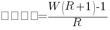
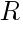

<!DOCTYPE html>
<html>
</html>
<head>
  <meta charset="utf-8">
  <meta http-equiv="X-UA-Compatible" content="IE=edge">
  <title>外汇站（fx-z.com） - 头寸规模管理说明</title>
  <meta name="description" content="">
  <meta name="viewport" content="width=device-width, initial-scale=1">
  <meta name="robots" content="all,follow">
  <!-- Bootstrap CSS-->
  <link rel="stylesheet" href="vendor/bootstrap/css/bootstrap.min.css">
  <!-- Font Awesome CSS-->
  <link rel="stylesheet" href="vendor/font-awesome/css/font-awesome.min.css">
  <!-- Google fonts - Roboto-->
  <link rel="stylesheet" href="https://fonts.googleapis.com/css?family=Roboto:400,300,700,400italic">
  <!-- owl carousel-->
  <link rel="stylesheet" href="vendor/owl.carousel/assets/owl.carousel.css">
  <link rel="stylesheet" href="vendor/owl.carousel/assets/owl.theme.default.css">
  <!-- theme stylesheet-->
  <link rel="stylesheet" href="css/style.default.css" id="theme-stylesheet">
  <!-- Custom stylesheet - for your changes-->
  <link rel="stylesheet" href="css/custom.css">
  <!-- Favicon-->
  <link rel="shortcut icon" href="img/favicon.png">
  <!-- Tweaks for older IEs--><!--[if lt IE 9]>
    <script src="https://oss.maxcdn.com/html5shiv/3.7.3/html5shiv.min.js"></script>
    <script src="https://oss.maxcdn.com/respond/1.4.2/respond.min.js"></script><![endif]-->
</head>
<body>
  <div id="all">
    <div class="container-fluid">
      <div class="row row-offcanvas row-offcanvas-left"> 
        <!--   *** SIDEBAR ***-->
        <div id="sidebar" class="col-md-4 col-lg-3 sidebar-offcanvas">
          <div class="sidebar-content">
            <h1 class="sidebar-heading"> <a href="https://fx-z.com">fx-z.com</a></h1>
            <p class="sidebar-p">介绍外汇相关的基本知识，告诉您如何进行自己的技术面和基本面分析，讲解先进的交易理念，并且为您阐述失败交易者与专业交易者之间的真正区别。 </p>
            <p class="sidebar-p">通过这些课程的学习，您将学会如何根据自己的优势来应用情绪分析，还将了解真实世界的事件会对货币汇率产生什么影响，央行在外汇市场中所发挥的作用，以及交易者在颇受欢迎的即期外汇交易中有哪些选择方案。 </p>
            <ul class="sidebar-menu">
                <!-- Link-->
                <li class="sidebar-item"><a href="https://fx-z.com" class="sidebar-link">首页</a></li>
                <!-- Link-->
                <li class="sidebar-item"><a href="cihui.html" class="sidebar-link">外汇词汇</a></li>
                <!-- Link-->
                <li class="sidebar-item"><a href="ebook.html" class="sidebar-link">获取外汇电子书</a></li>
            </ul>
            <p class="social"><a href="https://www.forextimechina.com.cn/zh?form=IZIN" target="_blank"data-animate-hover="pulse" class="external facebook"><i class="fa fa-eur"></i></a><a href="https://www.forextimechina.com.cn/zh?form=IZIN" target="_blank" data-animate-hover="pulse" class="external gplus"><i class="fa fa-gbp"></i></a><a href="https://www.forextimechina.com.cn/zh?form=IZIN" target="_blank" data-animate-hover="pulse" class="external twitter"><i class="fa fa-rmb"></i></a><a href="https://www.forextimechina.com.cn/zh?form=IZIN" target="_blank" title="" class="external instagram"><i class="fa fa-dollar"></i></a><a href="https://www.forextimechina.com.cn/zh?form=IZIN" target="_blank" data-animate-hover="pulse" class="email"><i class="fa fa-money"></i></a></p>
            <div class="copyright text-center text-md-left">
             
              
            </div>
          </div>
        </div>
        <!--   *** SIDEBAR END ***  -->
        <!--   *** DETAIL ***-->
        <div class="col-md-8 col-lg-9 content-column white-background">
          <div class="small-navbar d-flex d-md-none">
            <button type="button" data-toggle="offcanvas" class="btn btn-outline-primary"> <i class="fa fa-align-left mr-2"></i>菜单</button>
            <h1 class="small-navbar-heading"> <a href="https://fx-z.com/17-5.html">下一篇 </a></h1>
          </div>
          <div class="row">
            <div class="col-xl-10">
              <div class="content-column-content">
                <h1>头寸规模管理说明</h1>
  <p>
    许多外汇交易者（如果不是大多数）每次均交易固定数量的合约，并在每种货币对中交易相同数量的合约。统计学上可以结论性地表明，在每笔交易中交易固定数量的合约并非最佳交易方式，根据时间的推移和不同货币来调整合约数量的效果要好很多。
</p>
<p>
    管理头寸规模是一项通过调整交易合约数量来提高盈利率的资金管理策略。它与根据交易对您有利的方向而逐渐修改合约数量（被称为“缩放”策略）不同。
</p>
<p>
    头寸规模管理在您交易之前就已确定合约数量，这正是它与缩放策略的区别之处。它的理念有两种应用方式。第一种方式先采用固定的头寸规模，例如每笔交易采用一、两笔合约，然后再转换为以风险比例为基础。这种方式也被称为固定风险方法，意即每笔交易所冒的最大风险占全仓资金的比例（例如经典的 2% 比例）。您根据计划亏损的资金比例（作为止损位功能）来确定合约数量。可变的风险比例/固定风险方法被称为可变风险，意即您根据交易的外部因素（例如指标/突破力量等）调整风险比例，以便提高或降低您愿意承担的亏损资金比例。这些方法已在下一课中详细阐述。
</p>
<p>
    头寸规模管理的另一项重要应用是，在货币对之间修改您交易的手数。例如，您不是在每组交易中对每种货币对交易一手，而是对一种货币对交易两手，对另一种货币对交易三手，对第三种货币交易一手。您根据近期盈利率分配不同的手数，为生成高盈利以及零亏损或低亏损的货币对分配更多合约。盈利是否来源于您优秀的交易系统，您个人的睿智和技巧，还是任何别的原因，这都不重要。如果您通过货币对 A 每月获利 18%，货币对 B 每月获利 6%，您为货币对 A 分配的资金应该是货币对 B 的 3 倍，或者应将货币对 A 的合约数量提高至 3 倍。
</p>
<p>
    您应该定期（例如每月）分析每种货币对的盈利/亏损比率，并根据近期表现为后续交易分配资金。如果您了解货币对 A 为何表现较好则更好，但这不是必需条件。有时，与任何其他策略相比（包括修改交易系统和交易风格），根据上月盈利/亏损来分配下月的资金比例能够产生更多的资金收益。
</p>
<p>
    在大宗商品交易中管理头寸规模的好处在 Ralph Vince 的著作中被首度提及，这些著作包括《The Mathematics of Money Management》和《Portfolio Management Formulas》。Vince 的书不是为内心胆小的人准备的。问题之一在于，Vince 建议根据被称为最佳 f 值（optimal f）的起点来分配资金；其中，该值的计算还用到证券中曾经历的最大亏损。每次的计算值均取决于最严重的亏损。从数学角度而言，这种方法非常合理，但是当您得知产生最大亏损的条件已经发生变化之后，您将很难持续应用这种计算方式。您也知道，或者可以推测，最大的亏损尚未出现。
</p>
<p>
    不过，Vince 的方法也有优点，即让您开始将成功的交易视为一项统计工作。进行外汇交易时，请忽略您的国际经济学博士学位或任何其他资质。如果您分配的资金不正确，而且一开始就按照最大亏损分配资金，那么您最终将无法获得最佳盈利/亏损比率。这并不代表您需要先学习统计学才能交易，但这确实意味着交易与赌博有一些共同的硬性规则。如您所知，大量初期统计工作均始于对赌博的研究。
</p>
<p>
    Vince 的最佳 f 值其实是最著名的赌博资金分配系统——凯利公式（Kelly criterion）的改良版。这一公式得名于一位数学家（1956 年），而且最终被用于许多其他用途，甚至赌场和华尔街。据传，巴菲特也使用它。Kelly 公式的报道之后，最著名的相关书籍是由 Edward Thorpe（1956 年）所著的《击败庄家》（Beat the Dealer）。此外，最全面且最具可读性的评论是由 William Poundstone（2005 年）所写的《财富公式》（Fortune’s Formula）。如果您想阅读关于交易数学的书籍，《财富公式》将是您的理想之选。
</p>
<p>
    对于大多数交易者而言，凯利公式背后的数学计算都较为复杂，但有一点是您必须知道的：您为交易投入的资金比例（投注比例）等于“edge”除以“odds”。您的“edge”是指您在交易中成为赢家的盈利率，而且您知道该盈利率来源于您的历史交易成绩。“odds”是指您的盈利/亏损比率。
</p>
<p>
     
</p>
<p>
    其中：
</p>
<p>
    凯利比例 — 为单笔资金投入的资金比例
</p>
<p>
      — 交易系统在一段时间内的赢率
</p>
<p>
     一段时间内的平均盈利/亏损
</p>
<p>
    通过凯利比例，您将获得“最佳”本金增长。它的问题在于，每笔交易之后，您必须重新计算它的值。另一个问题是，完全按照凯利公式分配资金可能导致灾难性的亏损，即 Vince 提出的在凯利公式中用最严重的损失代替平均损失。有些交易者试图采用凯利比例的一半——即“半凯利比例”或推荐金额的 25%——即“1/4 凯利比例”来降低凯利方法的风险。
</p>
<p>
    2013 年，Van Tharp 写了一本名为《The Definitive Guide to Position Sizing》的书，对凯利公式做了一些修改，以便它对于仍无法直观理解的读者而言更容易获取和应用。Tharp 称，严格地使用止损位和头寸管理才是更有效的保持账户活力的方法。导致账户亏空的首要原因是未能正确止损，其次是对头寸管理不善。Tharp 的一些拥护者将他的理念进一步引申为：止损位设置即风险管理，头寸管理即资金管理，这引起了许多人的争论，但更重要的是，您可能设置了最佳止损位，但如果头寸管理不善，您将无法实现最佳绩效（即使您的交易并未失败）。
</p>
<p>
    Tharp 引入了 R multiple 的概念，其中，R 代表风险，但您无需深入研究也能明白其原理。例如，假设您有 $100,000，同时愿意为下一笔交易承担 1% 或 $1,000 的风险。货币价价格（AUD/USD）为 0.8950，止损位为 20 点或 .8930，则您的风险为 30 点或约 $300。
</p>
<p>
    用预定风险（$1,000）除以 $300，得到 3.3 份合约，即您大致可买入 3 份合约。“风险”始终意味着您愿意在单笔交易中亏损的金额。在本例中，1R 即 $1,000。请注意，风险与证券的价格移动并无内在关联；您需要自行确定风险。R 方法并不提供任何盈利目标或收益预期——它只通过交易正确的合约数量来控制亏损的美元金额和百分比。您应该根据自己的离场规则来选择盈利目标，例如 2R 或其他数目。如果您成功以 2R 的收益离场，则本例中您的收益为 $2,000，或 200 点除以 3 份合约，即每笔交易 67 点。经过较长时间的交易之后，收益更高、亏损更低的 R 更加有利。
</p>
<p>
    请注意，Tharp 的书籍和研讨会均颇为昂贵。而且，您也无需掌握统计知识，或者在电子表格上进行复杂的计算。关键是要了解，理性的外汇风险评估将导致极低的头寸规模，这意味着许多交易者进入了更多的合约（多达经纪商杠杆规则所允许的数量），从而承担着过高的风险。
</p>
<p>
    <br/>
</p>
<p>
    <br/>
</p>
              </div>
            </div>
          </div>
        </div>
      </div>
    </div>
  </div>
  <!-- JavaScript files-->
  <script src="vendor/jquery/jquery.min.js"></script>
  <script src="vendor/popper.js/umd/popper.min.js"> </script>
  <script src="vendor/bootstrap/js/bootstrap.min.js"></script>
  <script src="vendor/jquery.cookie/jquery.cookie.js"> </script>
  <script src="vendor/owl.carousel/owl.carousel.min.js"></script>
  <script src="vendor/masonry-layout/masonry.pkgd.min.js"></script>
  <script src="js/front.js"></script>
</body>